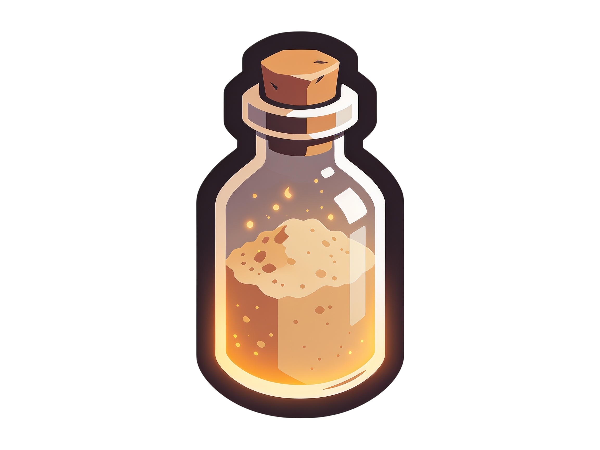

Cube Reroll Lab
The reroll gamble, simulated with the real numbers: 3 dust per pull, an 8% Greater chance, and a hard cap of 5 rerolls on Rare or 10 on Legendary and Relic.
Pick a tier, then reroll the highlighted affix. Every pull re-draws the value anywhere in the affix's band - it can get worse. This is exactly the in-game math, so use it to calibrate how much dust a "perfect" roll really costs.
Gore RipperRare

dust: 30rerolls left: 5
Pull history
- No pulls yet - select an affix and reroll it.
What the lab honours
- Cost: every pull consumes 3 legendary dust (recycling one Rare yields 2 dust, so a pull is 1.5 recycled Rares).
- Caps: 5 rerolls per Rare item, 10 per Legendary or Relic - then the item is done gambling forever.
- Greater: each pull has an 8% chance to land the affix at Greater ★ (×1.2).
- The band: the value is redrawn uniformly in the affix's roll range - the same range the in-game card shows.
The lesson the lab teaches. Expected pulls to land in the top 10% of a band are ~10 - which is the whole Legendary budget and twice the Rare budget. Reroll to fix a bad roll, not to chase a perfect one; perfect rolls are what grafting Tempers is for.